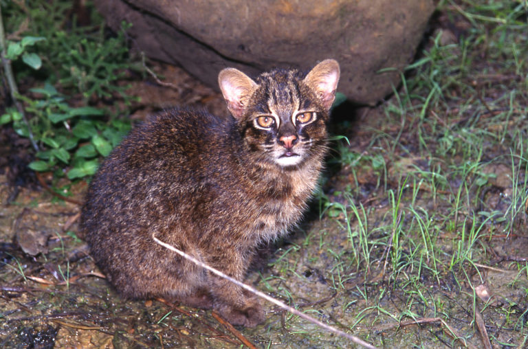

イリオモテヤマネコ
イリオモテヤマネコ（西表山猫、）は、ベンガルヤマネコ属に分類される、ベンガルヤマネコの亜種である。
1965年、八重山列島の西表島で発見された。20世紀に入って発見された中型以上の哺乳類は稀有であり、また当初はネコ類でも原始的な形質を有する新属・新種と発表されたこともあってその発見は大きく取り上げられた。しかし、現在は遺伝情報の分析により、独立種ではなく、アジア東部に生息するベンガルヤマネコの亜種に分類されている（ベンガルヤマネコに似ていること自体は、当初から指摘されていた）。国の特別天然記念物に指定されている。

分布
日本列島（西表島）の固有亜種。 西表島は面積が290平方キロメートルほどで、これはヤマネコの住む島としては（またヤマネコの生息域としても）世界最小。
分布域内では、主に標高200メートル以下にあるスダジイやカシからなる亜熱帯もしくは暖帯の森林に生息する。河川の周辺や低湿原、林縁などを好む。
形態
イリオモテヤマネコの骨格標本（西表野生生物保護センター）
体長はオス 55-60センチメートル、メス 50-55センチメートル、体重はオス 3.5-5キログラム、メス 3-3.5キログラムと、オスの方がメスより少しやや大きい。尾は先端まで太く、尾長は23-24センチメートル。胴が長く、四肢は太く短い。
全身の地色は暗灰色や淡褐色で、腹部や四肢の内側はより淡く、あごは白色である。頭部の暗褐色の斑は頬に左右に2本ずつあり、他のベンガルヤマネコのように額から背面にかけて5-7本の縞模様が入るが、他のベンガルヤマネコとは違い肩の手前で途切れる。体側面には暗褐色の斑点、胸部には不規則に3-4本の帯模様が入る。尾全体は暗褐色であり、尾背面には不規則に暗褐色の斑点が入るが、尾腹面に斑紋が入らず、先端は暗色である。
耳介の先端は丸く黒色の毛で縁取られ、先端の体毛は房状に伸長しない。また成獣の耳の背面は白濁色の虎耳状斑とよばれる斑紋がある。この虎耳状斑は、他のベンガルヤマネコは幼獣の時から小さな白濁した斑があり、成長するにつれ白色になるが、イリオモテヤマネコは幼獣にはこの虎耳状斑は無く、成長しても白色にはならない。虹彩は淡い琥珀色である。吻端の体毛で被われない板状の皮膚（鼻鏡）は淡赤褐色をしており、大型で、鼻面も太い。肉球の幅はイエネコの24-30ミリメートルより大きく、29-37ミリメートルである。
頭骨はイエネコに比べて細長いが、他のベンガルヤマネコとは大きな違いはない。しかし、他のベンガルヤマネコよりも頭骨が厚く、その分脳の容量も小さく、脳の重量は他のベンガルヤマネコのオスの42グラムに対して、イリオモテヤマネコのオスは30グラムと小型である。後頭骨の突起と聴胞が接しない。下顎の縫合部が短い。歯列は門歯が上下6本、犬歯が上下2本、小臼歯が上下4本、大臼歯が上下2本の計28本で、ヤマネコなどのネコ類より上顎前臼歯が1対少ない。亜熱帯に生息する哺乳類には珍しく、歯に年輪ができることが確認され、これにより年齢別での行動分析などができるようになると期待されている。臭腺（肛門腺）は他のベンガルヤマネコを含む他のネコ類は肛門内にあるのに対し、イリオモテヤマネコは肛門を取り囲むように存在する。
遺伝的な差異がわずかであるにもかかわらず、このように形態的な差異が大きいことから、発見当時は新属新種とされた。
生態
夜行性で、特に薄明薄暮時に活動する。昼間は樹洞や岩穴などで休む。1-7平方キロメートルの行動圏内で生活する。行動圏内にある石や切り株、藪などに糞尿をかけて縄張りを主張する。地表性だが、樹上に登ったり、水に入ったり、潜水することもある。
食性
食性は動物食で、哺乳類や鳥類、爬虫類、両生類、魚類、甲殻類などを、日に400-600グラム捕食する。他のヤマネコ類はネズミ類やウサギなどの小型哺乳類が主要な餌であるのに対し、西表島にはネズミ類やウサギなどの小型哺乳類が元来生息していない上にイリオモテヤマネコと競合するような肉食哺乳類が他には生息しておらず、生息環境や餌資源などの棲み分けが必要ないために、様々な生物を幅広く餌としている。
哺乳類ではクマネズミ、クビワオオコウモリ、リュウキュウイノシシの幼獣などを、鳥類ではカルガモ、オオクイナ、コノハズク、シロハラ、シロハラクイナ、爬虫類ではヘビ類や、キシノウエトカゲ、両生類ではサキシマヌマガエルなどを、その他、マダラコオロギ、カニなどを食べる。ツグミより大きい鳥を捕食する際、他のネコ類は羽毛をむしって食べるが、イリオモテヤマネコは大きな鳥類でも羽毛をむしらず丸ごと食べる。他の多くのネコ類のように脊髄を破壊して獲物をすぐに仕留めることはせず、動かなくなるまで咥え続ける。狩り場の中心は湿地や水辺であり、水に入って泳いだり潜水して水鳥や魚、テナガエビ類などを捕らえることもある。
糞分析の結果では、食料の中で出現率が多いのは、鳥類が約60%、クマネズミが約30%、昆虫類が約30%などであり、トカゲ類やカエル類は15-20%程度で、クビワオオコウモリの出現率は3-17%、リュウキュウイノシシなどの出現率は1%弱ほどである。その他の魚類や甲殻類の出現率は3-4%程度である。推定重量に対する出現率が多いのは水鳥類であり年間を通して60%前後、次いでクマネズミが年間を通して10-30%ほどを占める。
食性には季節による変化も見られ、クマネズミやカエル類は年間を通して捕食され、春から夏にかけてはトカゲ類、秋から冬にかけてはマダラコオロギやクビワオオコウモリが多くなる傾向にある。
繁殖
普段は夜行性もしくは薄明薄暮性であるが、繁殖期には日中も活動するようになる。繁殖期以外は単独で行動するが、繁殖期中の交尾期になるとつがいで行動するようになる。繁殖期は12月から3月にかけてであり、メスは繁殖期中に発情を何回か繰り返すが、発情のピークは1-2月頃である。2月下旬になると2週間程度の絶食期があり、その間はメスの発情が特にピークを迎え、オスとメスは常時行動を共にするようになり、この間に妊娠をすると考えられている。
繁殖形態は胎生で、4-6月に樹洞や洞窟などで1回に1-3匹の幼獣を産む。この出産や育児用の樹洞は、風通しがよく、乾燥した場所が選ばれる。 生まれた子供は約11ヶ月の間、メスに育てられる。幼獣は秋から冬にかけて独立し始めるが、数ヶ月から最大で数年の間、母親の行動圏にとどまる。生後20ヶ月で性成熟する。
行動圏と縄張り
イリオモテヤマネコの行動圏の面積は季節的な変化や個体差、地域差は見られるものの繁殖期には行動圏が狭くなり、平均的な行動圏はオスで1.5-4.9平方キロメートル、メスで0.85-2.75平方キロメートルである。この行動圏は他の個体の侵入を許さないことから、縄張りとほぼ同一と考えられている。オスとメスの行動圏は重複しており、オスの行動圏内に1-2匹のメスが生息している。通常は同じ性同士の行動圏は大きくは重複しないが、一部重複していることがある。この行動圏の重なりが占める場所は、狩り場となる場所が大きい。この行動圏内を狩りやマーキングをしながら、3-4日間かけて巡回していると考えられている。
若いオスや一部のオスは行動圏を持たず、島内を放浪しながら縄張りが空くのを待ち、定住しているオスがいない場所を見つけると、そこを縄張りとする。メスは幼獣を自分の縄張りに残し、次の繁殖期を迎えると新しく縄張りを形成する。
寿命
野生下での寿命は推定で7-8年、飼育下の寿命は8-9年である。しかし今泉(1994)は交通事故死や罠などによる人為的な影響を考え合わせると、4-5歳であるかもしれないとしている。1979年6月14日に親ネコとはぐれて生後約5週齢で保護されたオスの個体「ケイ太」は、沖縄こどもの国動物園で飼育され、老衰で死ぬまで13年間生き、推定年齢は13年2ヶ月とされる。国立科学博物館で飼育されたメスの個体の年齢は推定で9歳7ヶ月と見られる。1996年8月6日に交通事故に遭い保護されたオスの個体「よん」は、環境省西表野生生物保護センターで飼育期間最長となる14年8ヶ月飼育され、推定年齢は最高齢となる15歳1ヶ月とみられる。
人間との関係
開発による生息地の破壊、イヌによる捕食、交通事故、イノシシ用の罠やカニ罠による混獲などにより生息数は減少している。第2次調査（1982-84年）における生息数は83-108匹で、第3次調査（1992-93年）では99-110匹、第4次調査（2005-07年）では100-109匹と推定されている。第3次調査時における推定個体数は、第4次調査と同じ推定方法を用いると108-118匹と推定され、個体数は減少していると考えられている。
発見以来、様々な生態調査が行われており、現在も、イリオモテヤマネコの生息状況を把握するため、自動撮影調査、ラジオ・テレメトリー調査、ウイルス感染の有無を確認する臨床病理調査、糞や食痕を確認する痕跡調査、住民や観光客の目撃情報をとりまとめる目撃情報調査などが行われている。
イリオモテヤマネコの生息域の一部は1972年4月18日に西表政府立公園（同年5月15日の沖縄返還にともない西表国立公園となった）に指定されたほか、1991年3月には11,584.67 ha （約115.84 km2）の「西表島森林生態系保護地域」が設定され、地域内の自然環境保護が図られている。しかし、これらの保護区はイリオモテヤマネコの生息地に適しているとされる標高200メートル以下の地域を十分には含んでいない。1995年には保護増殖事業・調査研究の実施・普及啓発等の業務を統合的に推進するための拠点施設である「西表野生生物保護センター」が設置された。
1972年の沖縄返還以来、本土資本による開発が進み、特に1977年の島を半周する県道215号白浜南風見線の全線開通以降、毎年数頭のイリオモテヤマネコが交通事故にあっている。環境省や沖縄県、竹富町などにより道路標識や動物用トンネル、ゼブラゾーン（振音舗装）、幅広側溝、片勾配側溝の設置などの保護対策が進められている。一方で、イリオモテヤマネコをはじめとする西表島の貴重な生態系を守る取り組み、例えば土地改良事業などの土地開発の制限などに異を唱える住民も少なくない。
保全状態評価
国際自然保護連合(IUCN)による保全状態の評価では、種ベンガルヤマネコ (P. bengalensis) は、Least concern（軽度懸念）に分類されている。一方で亜種イリオモテヤマネコ (P. b. iriomotensis) は当初は Endangered（絶滅危惧IB類）に分類されていたが、2008年の査定では西表島でしか確認されていないことや個体数が減少を続けていることなどから、Critically endangered（絶滅危惧IA類）に分類されている。
生物間の問題
上記のような交通事故など、開発に伴う原生林の伐採、湿地の開発といった人間の手による自然環境の改変と並んで、飼い猫や野良猫との競合や伝染病の伝播、交雑による遺伝子汚染や、イヌによる捕食などが懸念されている。特に懸念される要因は飼い猫が野生化・半野生化した野良猫の存在であり、食物を奪い合う競合関係による圧迫、野良猫との接触による猫免疫不全ウイルス感染症（いわゆるネコエイズ）をはじめとする感染症、これまでのモニタリングでは検出されていないが交雑による純血個体の減少が懸念されている。
1999年6月に野生生物保護センターなどによる飼い猫や野良猫50匹とイリオモテヤマネコ23匹を対象とした調査で、イリオモテヤマネコからは猫免疫不全ウイルス感染症の原因となる猫免疫不全ウイルス（FIV）は検出されなかったが、飼い猫や野良猫3匹からFIVが検出された。イリオモテヤマネコへの感染が懸念されたため、翌2001年に竹富町では飼い猫の登録を義務づける「ネコ飼養条例」が制定され、さらに2008年6月には飼い猫のウイルス検査や予防接種、避妊・去勢手術、マイクロチップの埋め込みの義務化や飼育頭数の制限など厳しい内容に改正されている。さらに耳腺などから強い毒液を分泌するオオヒキガエルが島に入り込んでいることが判明し、西表島へのさらなる侵入や定着を防ぐために、2008年から石垣島で市民参加の駆除活動が行われている。